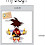
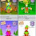
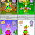

Can we choose both? Another words, we can have both designs, and change our chobot back and forth between the two. I like both of them, and can't choose one.
The first one (top) It would be a change to see new chobots, Maybe you could change it a little more, its not that you have to, But the only thing you changed is the eyes compared to the old one, you don't have to accept my judgment, you can keep your own. =)
I don't like the new chobot's, I want the old one's back And I'm being honest Somone Private Chatted me and said he would quit Because for the new chobots Plz get the old one's back :,(
I don't want to sound mean but honestly, I hate it. I'm thinking about quitting chobots because I really dont like how my chobot looks. But I have an idea. If it's possible, you should make everyone have an option of having the new one.
You guys should keep the the new one but have either magic to change to the old one for a day for like 10000 bugs or just be able to buy the old one for maybe 50000 bugs.
Puffles! That is a great idea! We can have both of them! Put bodies(full) in the catalog! Please no real money ;) You can change the bodies(full) on your self!:D Thx Puffles!
i may quit for this this is new much your JUST LIEK CLUBPENGUIN you has ruiened this by 2 ways 1: crown catolof 2: new design you guys dont get it old is better we dotn want new and flashy i want classic you just ruined this game i will look for a new home now ......:'(
:( This update made me very sad. The body of this new chobot is perfect. (I like how it's belly looks :P) But the eyes look mean and angry and... Well... Ugly..
You know vayerman i have an idea i think chobots should have a change shower it really cool you can change your look like the new one or the old one it better cause some people might not like the new one and some people want the old one back it should cost bugs and i think it should be in make your own house shop i hope this is a great idea vayerman :D
I like the old one. Everything has changed since the first day of chobots, so it was nice to see the old-fashioned chobot around when it was here. I like the old one a lot better than the new one.
ok, i had about 75 pieces of clothing in my wardrobe and now all i have is my dress, my sunglasses, my hair and my shoes!!! no rocket boot, no umbrellas, no flags, no more anything!!!! if any body can help i would never forgive you!!!
I like the old one better you should make it where we get to choose which type we want like make a new bar like the age bar and we can choose if our chobot can look old a baby that etc.
isaiah nitro and i are wearing masks because we dislike our face! my sister is crying bc she plays chobots and she says her chobot too "serious" you made my sister cry,give us old chobots and liberty!
I LIKE THE OLD ONE D: i am sooooo sad i cant even tell u that u changed it its not good old chobots anymore :'[ and its barely even different. its just like u want to change chobots, heres a friendly note: there are other ways u can make chobots newer/hipper!!!!!
Is there any way I can pay you bugs to get my old look back? Alot of ppl are wearing masks to cover their face. Honestly i DO NOT like the new one. I LIKED LOOKING CHUNKY!!!! :(
I think the new look is good but Its not as good as the old one we look like ninjas abit And I think we should have some kind of machine to change the bodies and faces for those who don't like this new look and people who like it should stay the same.
Sorry but I argee with Ky, you put alot of effort into it, but I don't like the new one! Please bring back the old one! I miss it on the first day!!! Please
The old one looks cuter, and the new more serious. I like the new.. The change is good, you guys have done a great job! I agree with jessie, I like that theres no gray stomach, but I dont liek the white dots in the pupils. But they are cute; I will get used to it, nice work! :)) -smirk
well i like old ones because it is easy to draw and it was our very first chobot and i cant evan pick a good outfit for the new ones :( soo i vote old ones sorry i know you all work hard on it but we like the old ones better
ewww i hate it, it may look good here but when you play it looks really baddd, and what did you do to our eyes they look maga creepy change it back plzzzz and no girl body either omg srry man but this sucks big time!!
I like the old one better because we look all normal and confident.I am not used to new things.Im so sorry for the new design,I pretty like the old one better.

-2.jpg)


{kind=link}
{kind=link}
131 comments:
awsome!
i like the new on better now!! its awesome
the new one is betta
hmmm, now the new one looks.... GREAT!!! u should see the cute faces they make on the graffiti wall, they are sooooo cute!
P.S. 4 comment! WEWT!
where do I go to change my chobots look?
Well, i like the old one :) But the poll doesn't agree with me =(
The new i think it is better it is not much alike than the first one i could just say that it makes it a bit more serious :P so i vote the new one
the first is better!
gelu_cool
I like both of them but still like the old one the best because I think it looks more cute
I Like the new one now!
the new one
Can we choose both? Another words, we can have both designs, and change our chobot back and forth between the two. I like both of them, and can't choose one.
new one rocks man
i like the new one! make it! :D
the very first one it looks like were beta
new one!
~cezar wants to look gooder~
great
first one:)
I like the old still better but the new one is also nice !
love the new one much better
IT ROCKS!!!!!!!!!!!!!!Its like a cookie thank you guru=)
~lostariel~
I dont like the new 1!Old 1!
Idk i think i still ike the old one :) the new one makes me look like well idk what lol but it looks funny so i like both XD
Kaicooper :)(:
..... :O
I like the one we used to look like................. the new one makes us look like old people
^
|
XO lol
definetly!p.s. whyed you make the boy ones fat in the old post?XP
i like the old one better
~Kiwii
well.....i'll miss thwe original one.......but i loooove the new one!
Old one :) But wasn't the new one supposed to look different??
The first one (top) It would be a change to see new chobots, Maybe you could change it a little more, its not that you have to, But the only thing you changed is the eyes compared to the old one, you don't have to accept my judgment, you can keep your own. =)
-Your friend Chewer
I like the beta.
I like them equally, I think both should be avalible
the old One :(
i love the old one makes us who we are chobots
oh and im nokia7788
The new one just isn't thick enough.
I want to be able to change them!

its not that very good! i dont like it =(
The new design is sooo funny xDD
~tania
My brother and I like the old chobot better, the new one looks a bit too robotic -.-
I don't like the new chobot's, I want the old one's back And I'm being honest Somone Private Chatted me and said he would quit Because for the new chobots Plz get the old one's back :,(
I hate them!!!!Make the old ones come back!!!
i like the old one but the new one is pretty cool.
They are both cool, but will we be able to choose which one we want? I hope so! :)
~ky
Thie first one looks like a gummy bear :P
I agree with puffles. her idea is great!
Lime~
Lavadog~
New id say but it is really me thats important is others :)
_Jordsno1 -.-_
please please please please please please please change the chobots back to the way they used to be. PLEASE!!!!!:|
Mr V you are awesome..the new design rocks!:D
Both are good and i am happy that the chobots team worked hard for it ;)
I don't want to sound mean but honestly, I hate it. I'm thinking about quitting chobots because I really dont like how my chobot looks. But I have an idea. If it's possible, you should make everyone have an option of having the new one.
With all due respect,
Antguy815
Keep Dis one =D No more other ones i think these are... AWESOME. =D
frankly, i prefer the old one
ummm i like both but when I saw the adorable eyes I change my mind its awesome:P
~Boy11
well...i dont like them so much as the old 1..but it's oki
You guys should keep the the new one but have either magic to change to the old one for a day for like 10000 bugs or just be able to buy the old one for maybe 50000 bugs.
NOOOOOO! The end of the world has come! Chobots is CHANGING... :O
- Blackie487
Puffles! That is a great idea! We can have both of them! Put bodies(full) in the catalog! Please no real money ;) You can change the bodies(full) on your self!:D Thx Puffles!
kirby7777~
i kinda miss da old one :( cannwe get to pick witch one we want? :'(
i may quit for this this is new much your JUST LIEK CLUBPENGUIN you has ruiened this by 2 ways 1: crown catolof 2: new design you guys dont get it old is better we dotn want new and flashy i want classic you just ruined this game i will look for a new home now ......:'(
old one nothin is better then what we already have xD
I like both and i agree with puffles thanks visit my new blog twischobothelpers.tk
~twi~
OLD ONE NEW IS YUKY
new totally
new totally
oops i double commented i dint mean to
:( This update made me very sad. The body of this new chobot is perfect. (I like how it's belly looks :P) But the eyes look mean and angry and... Well... Ugly..
PLEASE CHANGE THE CHOBOT BACK.
~Awsome/Plabel
its ok i kinda like the old one srry but they are both cool
You know vayerman i have an idea i think chobots should have a change shower it really cool you can change your look like the new one or the old one it better cause some people might not like the new one and some people want the old one back it should cost bugs and i think it should be in make your own house shop i hope this is a great idea vayerman :D
I like the old one. Everything has changed since the first day of chobots, so it was nice to see the old-fashioned chobot around when it was here. I like the old one a lot better than the new one.
i think the old one is definitely better. but i also agree with william, both should be available.
I like the new one much better thanks for considering our opinions.
Orangio
The new one!! ;)
they both are amazing! but i peffer the old 1! the new one looks alil 2 serious O_o
i just want the normal chobot :(
I like the old one change it for nikitathakor39 plz i look bad!
Ok so i dont like it well if u have beta kind do it!
i have a problem. :{
ok, i had about 75 pieces of clothing in my wardrobe and now all i have is my dress, my sunglasses, my hair and my shoes!!! no rocket boot, no umbrellas, no flags, no more anything!!!! if any body can help i would never forgive you!!!
I like the old one. I do like the new one, but the original is cooler. And it's a little hard to draw...
-Fuffley
And win r the winners of coloring page gonna be announced, and the dress up Hiki competition?
I miss the old one... But I like the new one too :) The chobots look more cute.

The new one
I can not play now, it scares my little reletives and she loved to watch me play with the old one.
I may play when she is gone
no offence to people that like the new design,but i like the older one WAY better.The new one looks like a grumpy man.
wow its very detialed. though i do htink you should add the dark part orund the belly ;)
p.s some of the items are to thick for the look like the paintbrush
I like the old one better you should make it where we get to choose which type we want like make a new bar like the age bar and we can choose if our chobot can look old a baby that etc.
isaiah nitro and i are wearing masks because we dislike our face!
my sister is crying bc she plays chobots and she says her chobot too "serious"
you made my sister cry,give us old chobots and liberty!
I LIKE THE OLD ONE D: i am sooooo sad i cant even tell u that u changed it its not good old chobots anymore :'[ and its barely even different. its just like u want to change chobots, heres a friendly note: there are other ways u can make chobots newer/hipper!!!!!
or can we choose which one we have??? i want old one :]
I love the new look but I choose the old one.
~weme124
i really like!it is so awesome!change is always good!it just needs some getting used to for other chobots!I really like it myself!
IM WEARING A MASK FOREVE RNOW!!!!!!
Is there any way I can pay you bugs to get my old look back? Alot of ppl are wearing masks to cover their face. Honestly i DO NOT like the new one. I LIKED LOOKING CHUNKY!!!! :(
~Shrinkygirl
I like the new ones! :)))
Thanks vayerman! And canab.... adn all the disghners. :))
yeaaa i definately dont like this
i think you went overboard with this look
by the way....mask sales have gone up since this look came out
I think the new look is good but Its not as good as the old one we look like ninjas abit
And I think we should have some kind of machine to change the bodies and faces for those who don't like this new look and people who like it should stay the same.
If you don't mind, and I know how much the designers put into it, could you please bring back the old look. I really miss it. :)
Thanks!
~ky
Sorry but I argee with Ky, you put alot of effort into it, but I don't like the new one! Please bring back the old one! I miss it on the first day!!! Please
SOOO THE OLD ON lol not that the new on is bad or anny thing but its not really character ristic idk why thoe it just dosent seem right but oww well
i like the old one better
maby if we can swich between them?
-conz88
new ... awsome =D!and better
I like the old one better :/
The old one looks cuter, and the new more serious. I like the new.. The change is good, you guys have done a great job! I agree with jessie, I like that theres no gray stomach, but I dont liek the white dots in the pupils. But they are cute; I will get used to it, nice work! :)) -smirk

i think that the older one is better =)
Man, u guys already updated it?!?!
I want the old one >:(
well i like old ones because it is easy to draw and it was our very first chobot and i cant evan pick a good outfit for the new ones :( soo i vote old ones sorry i know you all work hard on it but we like the old ones better
i dont like the new one, i like the old one better
sorry, but the old one is way better
no no no no no !!!!!! i like old one !!!!!!
i like puffles idea...............
Nooooooo I liked the other look that old chobots look it was awesome
ewww i hate it, it may look good here but when you play it looks really baddd, and what did you do to our eyes they look maga creepy change it back plzzzz and no girl body either omg srry man but this sucks big time!!
the majority dosent like it so can you change it can plz
I personally like the old design. Leaving chobot the same is a great idea :)
-Mcho04-
I personally like the old design. Leaving chobot the same is a great idea :)
-Mcho04-
vayerman not to be mean but, i dont like the new style. i really dont like it... i like the old way better.
i liked the old one better but i guess this one is ok.......
it scares my friends now so we have to play on something else when they come over...
sorry not to be mean tho
its angry
i like the old 1 beter
Nope I absolutely hate the new one!It looks wrong and bad. I look ugly.
I like the old one better because we look all normal and confident.I am not used to new things.Im so sorry for the new design,I pretty like the old one better.
Comments are preserved read-only.